이 포트폴리오는 데스크톱 브라우저에 최적화되어 있습니다.
PC 또는 노트북에서 접속해 주세요.
하나은행 아이부자 앱 UX 컨설팅
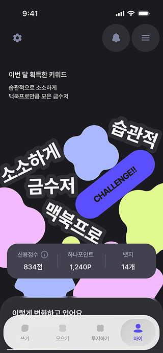
Overview
12세 이후 사용자의 이탈 문제를 해결하기 위해
아이부자만의 차별화된 서비스 역할을 새롭게 정의하는
UX 전략 컨설팅을 수행하였습니다
Project Background
아이부자는 국내 대표 미성년자 금융 앱으로, 어린이·청소년 고객을 확보하고 성인이 된 이후에는 하나원큐로 자연스럽게 전환시키는 것을 목표로 하고 있습니다. 그러나 12세 이후 사용자가 급격히 이탈하는 문제가 발생하고 있었습니다. 이탈한 사용자들은 하나원큐로 이어지지 않고 경쟁 서비스로 이동하면서, 하나은행이 기대했던 장기 고객 확보 체계가 제대로 작동하지 않는 상황이었습니다.
NPS 자녀 응답 및 이해관계자 인터뷰
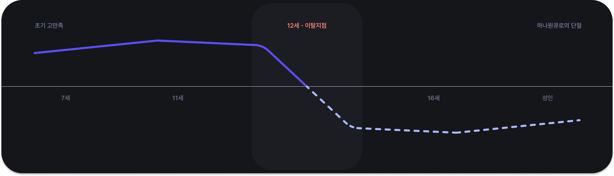
원인 01
유치하게 인식되는 브랜드·UI
초등학생 때는 괜찮았던 요소가 고학년이 되면
어린이 앱처럼 느껴집니다.
원인 02
부모의 소비 간섭·감시 이미지
자녀는 앱이 감시 도구로 인식되어 부담스럽고
자율성이 침해된다는 느낌을 받습니다.
원인 03
강한 또래문화의 대안
토스·카카오뱅크가 또래 안에서 기준이 되어 함께
사용하기 위해 아이부자를 이탈합니다.
대응 01
리브랜딩 · UI 개선
대응 02
간섭을 제거한 독립적 금융
대응 03
또래문화를 형성할 수 있는 기능
문제 01
평균 경쟁력 까지만 보유
성인과 유사한 UI는 대부분의 금융 앱이 이미 적용하고 있는 요소로, 차별점이 될 수 없습니다. Fintech 경쟁사와 비슷한 지속 투자도 어렵습니다.
문제 02
일반적인 이용경험·부족한 기능
'부모 간섭'이 느껴지지 않는 금융앱은 이미 시장에 여럿 존재하며, 시중은행의 제약으로 독립적 이용을 지원하는 기능을 제안하기 어려운 상황입니다.
문제 03
일반적인 이용경험·부족한 기능
특정 기능이나 서비스로는 또래문화를 만들거나 관계망을 형성할 수 없습니다. 선점효과와 경쟁하기 가장 어려운 부분은 문화의 형성입니다.
Discover
현재 지적되는 UI 불편이나 재미 요소 부족은 이탈의 원인이라기보다 표면적인 현상에 가깝습니다. 실제로 사용자들은 앱이 불편해서 떠나는 것이 아니라, 아이부자를 선택해야 할 이유를 느끼지 못해 이탈하고 있었습니다. 아이부자는 '편리하게 주고받는 용돈생활'을 핵심 가치로 내세우고 있지만, 용돈 수령·사용 중심의 역할에서는 경쟁 서비스 대비 차별화된 경쟁력을 확보하지 못하고 있었습니다. 따라서 문제의 본질은 기능이 아닌 서비스 역할에 있었으며, 기존 역할을 개선하는 것이 아닌 역할 자체를 재정의할 필요가 있었습니다.
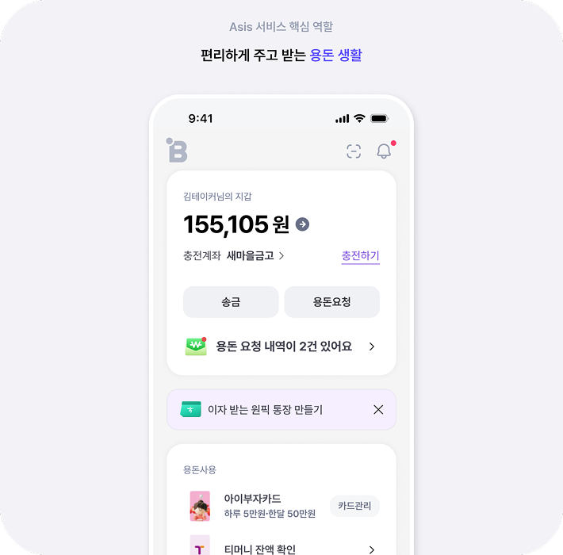
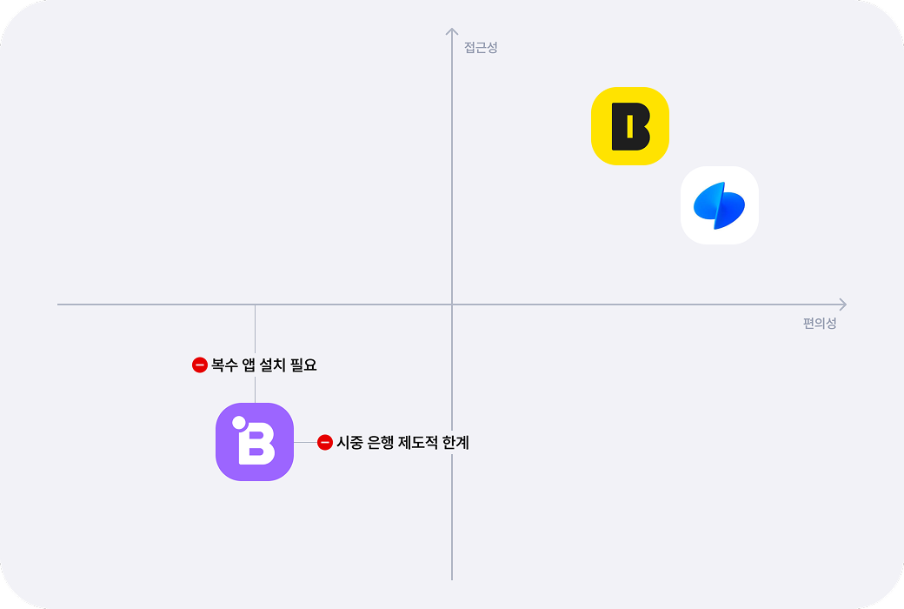
Define
경쟁사를 따라가는 대신, 하나은행만이 제공할 수 있는 미성년 자산 형성·관리 경험을 새로운 기회 영역으로 도출했습니다. 자산가들은 자녀의 소비를 통제하기보다, 어릴 때부터 자산을 직접 형성하고 관리하는 경험을 통해 금융 역량을 키워줍니다. 이는 고액자산가 고객 기반과 금융 전문성을 갖춘 하나은행이 가장 차별화할 수 있는 영역입니다.
*하나은행 고객은 4대 시중은행 중 평균 금융자산이 가장 높은 40대 중후반~50대 초반 남녀로, 공격적 투자 성향을 가짐(1억 원 이상 금융자산 비중 최고)
- 대한민국 금융소비자보고서 2023, 하나금융경영연구소
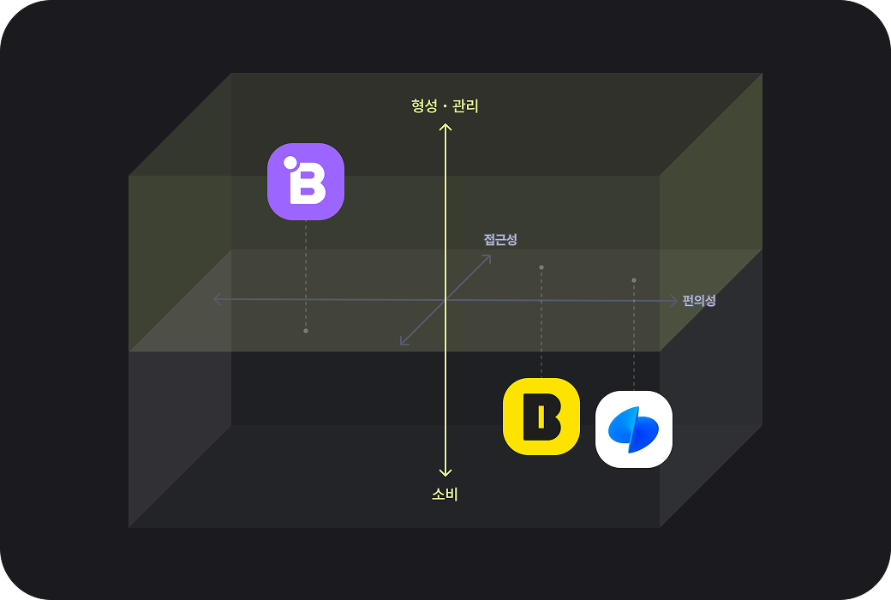
Service Concept
법적 미성년자를 12세 기준 아동・청소년으로 나눠 관리하던 소비 지원 App에서
금융 독립 전 사용자의 용돈 소비 - 자산 관리 가이드를 해주는 서비스로
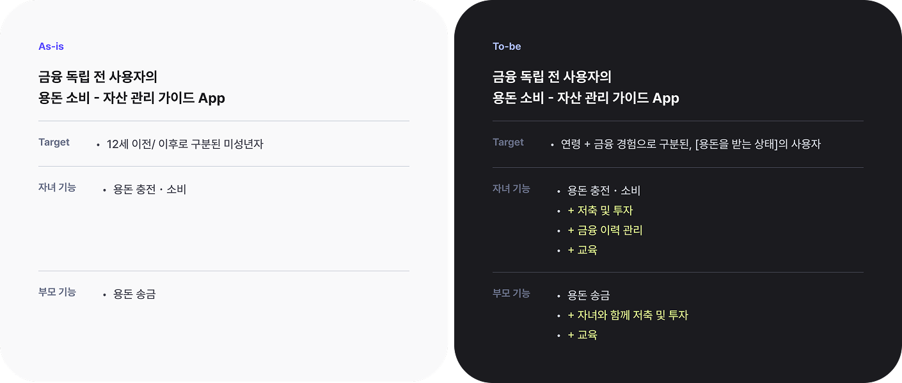
UI Concept — 많아지고 복잡한 기능 어떻게 해결할까?
서비스 방문 목적을 쓰기, 모으기, 투자하기, 자산 관리의 4가지 핵심 행동으로 구분하고, 이를 하단 GNB의 메인 메뉴로 구성하였습니다. 각 페이지는 방문 목적에 집중하는 영역과 목적 달성 후 경험을 확장하는 영역으로 구분하여, 사용자가 원하는 행동은 빠르게 수행하고 이후에는 관련 금융 경험을 자연스럽게 이어갈 수 있도록 설계하였습니다.
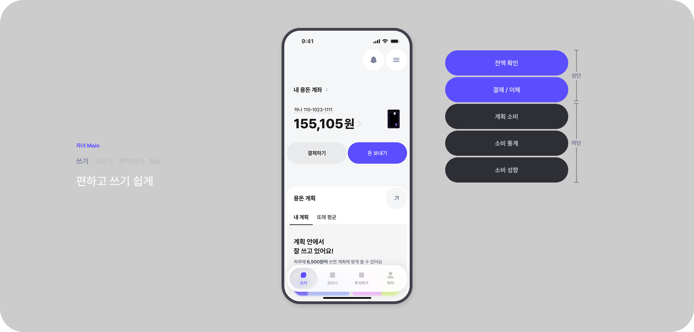
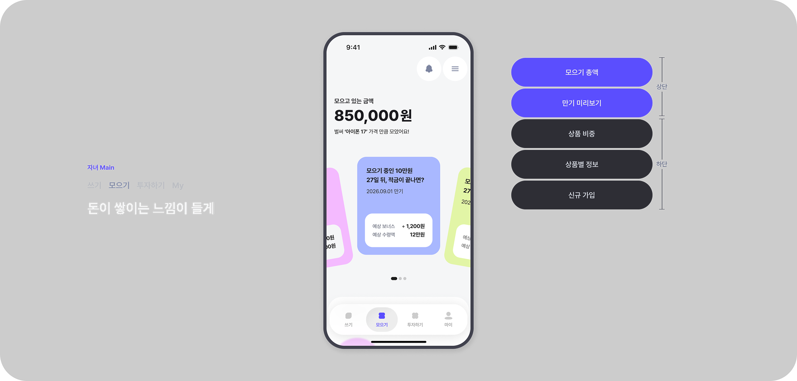
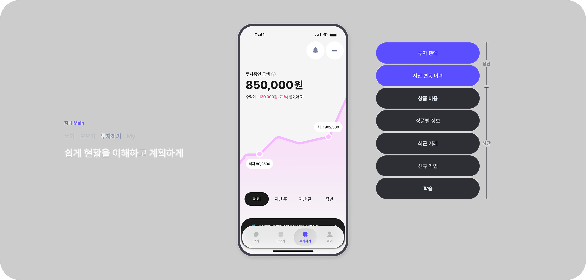
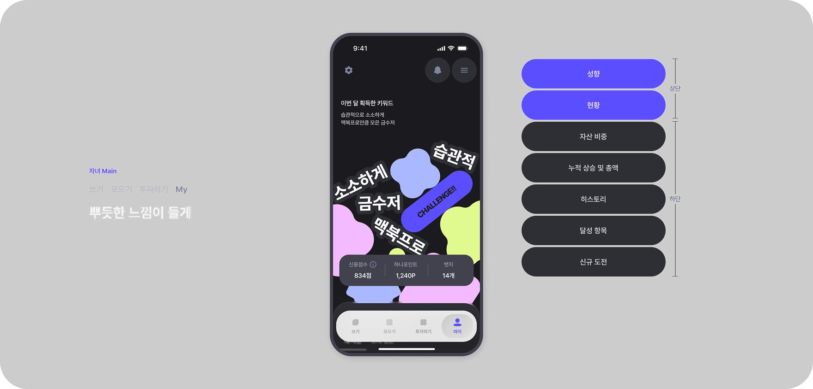
*공개된 화면은 프로젝트 산출물을 기반으로 재설계하였습니다.
UI Concept — 많아지고 복잡한 기능 어떻게 해결할까?
새로운 아이부자에서는 사용자가 직접 선택하고 고민하는 과정을 최소화하였습니다. 사용자의 데이터를 기반으로 기본 옵션을 먼저 제안하여, 사용자는 확인과 동의만으로 프로세스를 진행할 수 있습니다. 또한 사용자가 필요한 정보를 직접 찾는 것이 아닌, 필요한 정보와 다음 행동을 화면에 먼저 노출하고 시스템이 적절한 제안을 제공하여 사용자의 탐색 부담을 줄이고 행동 중심의 경험을 구현하였습니다.
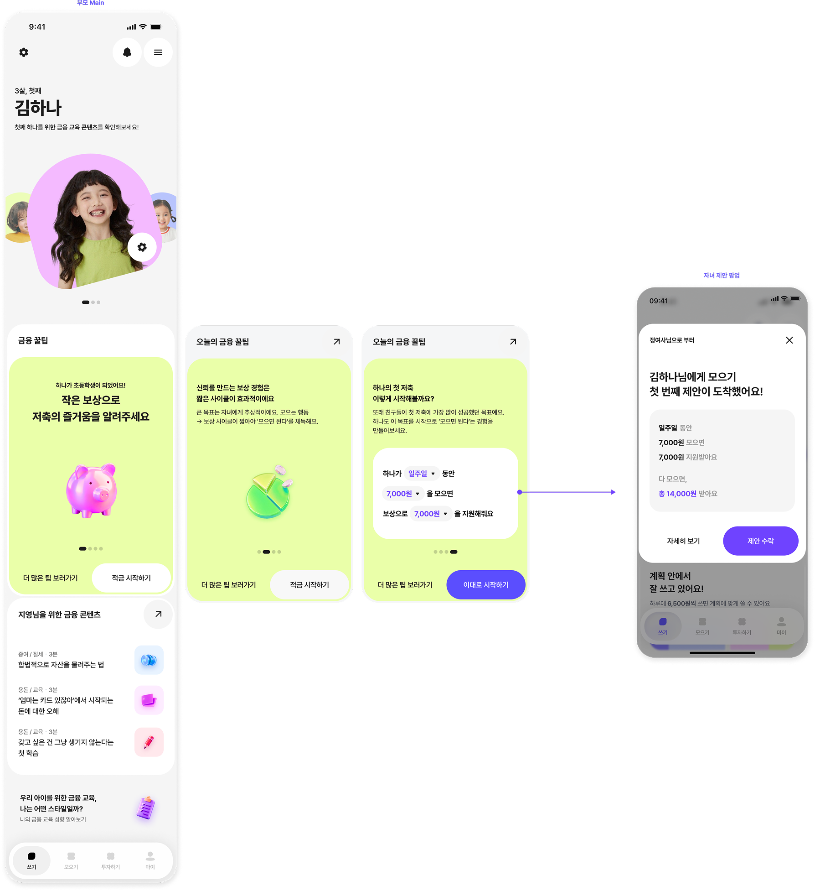
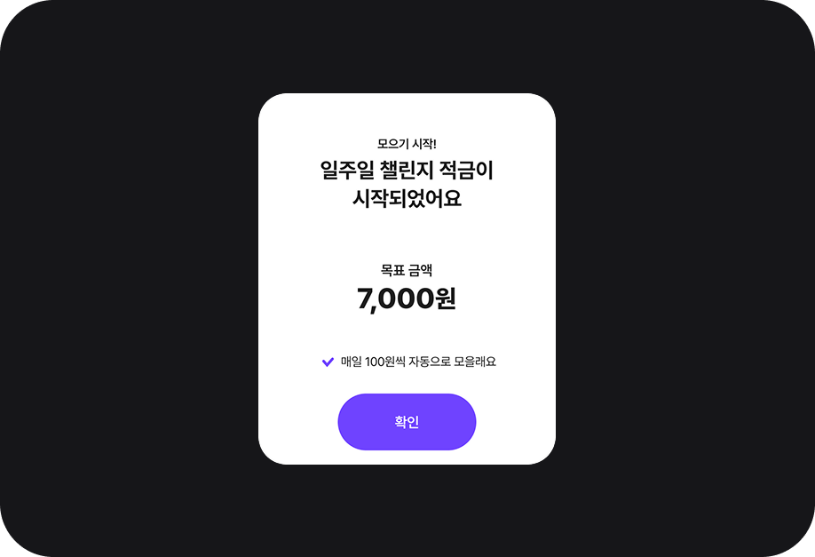
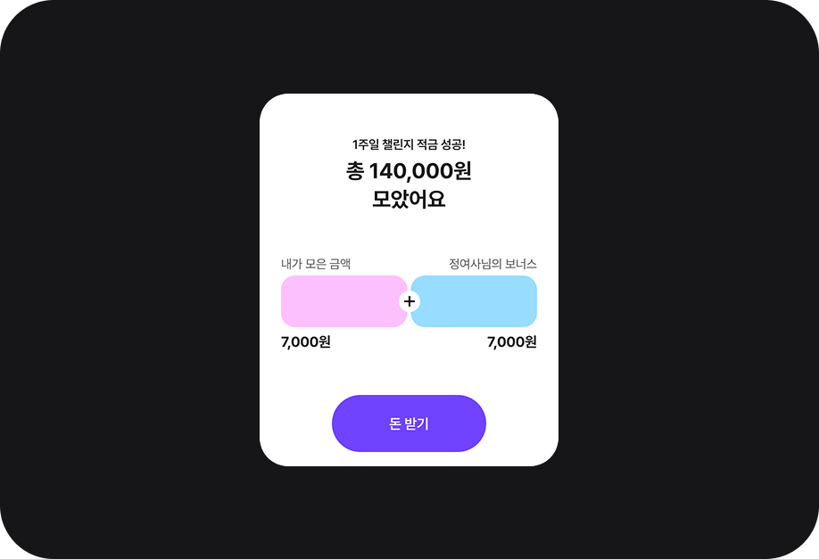
The Wealth Apprentice
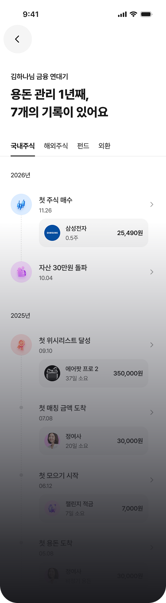
Retrospective
이번 프로젝트는 화면을 개선하거나 UI를 변경하는 작업이 아니라, 고객사가 명확하게 정의하지 못했던 문제를 다시 정의하고 서비스의 역할을 재설계하는 과정이었습니다. 기존의 용돈·소비 중심 서비스에서 자산을 모으고 관리하는 경험으로 방향을 전환하며, 아이부자가 지속적으로 선택받기 위해 어떤 역할을 해야 하는지 고민할 수 있었습니다.
다만 자체적인 사용자 리서치 없이 기존 데이터를 기반으로 진행했다는 점에서 한계가 있습니다. 이후에는 실제 사용자 검증을 통해 제안한 방향을 확인하고, 사용자의 목소리를 반영해 서비스를 더욱 구체화해 보고 싶습니다.